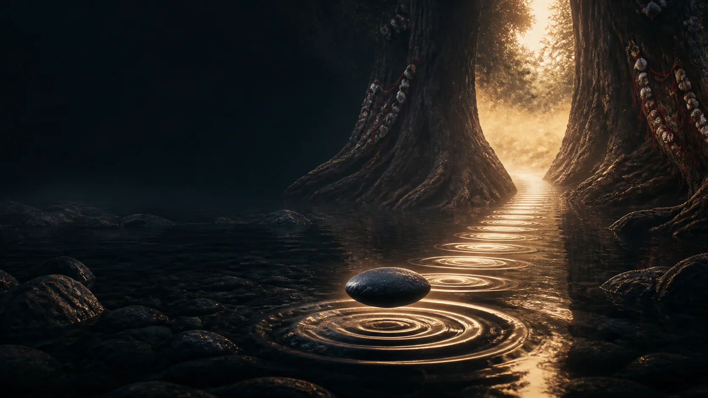

Learn publicly
History, language, diversity, public ritual grammar, ethics, and respectful visitor conduct.

Begin before the threshold
A twelve-part passage from first orientation to responsible public literacy—without pretending that a screen can initiate, divine, or replace a living community.
Contemporary interpretive illustration—not documentary or ritual instruction.
Orientation
History, language, diversity, public ritual grammar, ethics, and respectful visitor conduct.
Every analogy shows its limit. Every meaningful claim returns to a named source.
No divination, prescriptions, initiation, secret liturgy, spiritual diagnosis, or simulated possession.
Final passage
Prepare for a public invitation, observe without appropriating, and return with a responsible next step.
Completion
Complete every passage and its reflection to receive recognition of advanced public literacy—not initiation, office, or ritual authority.